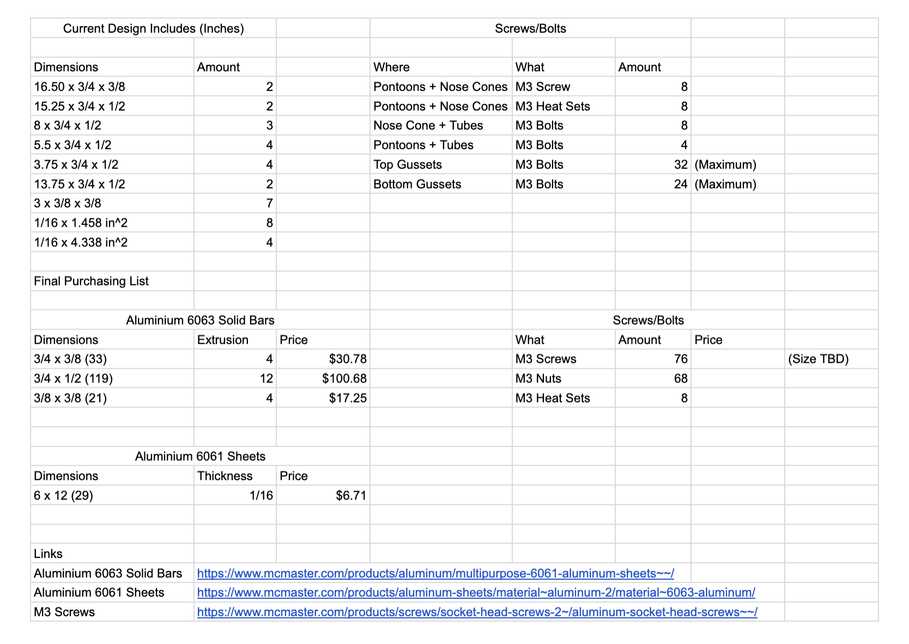

Goal and constraints
| Purpose | Structural and assembly test only. No electronics on board. |
| Scale | ¼. Stock and screws come in fixed sizes, and ¼ is the scale where the original member sections land on standard stock. |
| Supplier | McMaster-Carr only (club rule) |
| Locked dimension | 0.375 in thickness for bars that bolt into the 3D-printed pontoon pockets |
| Hull | Two 3D-printed pontoons with separate nose cones |
Choosing the stock
The CAD uses 3/4 × 1/2, 3/4 × 3/8 and 3/8 × 3/8 in members. McMaster sells those exact sections only as solid bar; hollow tube doesn't come in them. I compared four options:
| A · Solid 6063, CAD sizes (chosen) | $148.71 · ≈ 2.5 kg. Matches the CAD exactly. The extra weight is fine with no electronics. |
| B · Solid 6063, every member 3/4 × 3/8 | $116.53 · ≈ 2.0 kg. Dropped: the team wanted to keep the taller 3/4 × 1/2 rails. Thinner rails would lose about 58% of their vertical bending stiffness, since stiffness scales with height cubed (0.375³ ÷ 0.5³ ≈ 0.42). |
| C · Hollow 6061, 3/4 × 3/4 × 1/16 | $103.48 · ≈ 1.1 kg. Not chosen: 3/4 in tall, so it doesn't fit the 0.375 in printed pockets, and the thin wall can crush at bolts. It would become an option if the pockets were widened to 0.75 in. |
| D · Hollow 6063, 3/4 × 3/4 and 1/2 × 1/2 × 1/16 | ≈ $75.72 · ≈ 1.3 kg. Not chosen: members get taller and the bottom bars wider than the CAD, and a 1/16 in wall can't hold a thread. |
I also compared 6063 against 6061 tube prices across seven sizes. 6063 was 19–41% cheaper in thin 1/16 in wall, but not always cheaper in 1/8 in wall. The trade-off: 6063 yields at about 16 ksi against about 35 ksi for 6061 (McMaster). That's why this mini frame tests geometry and assembly, not the final boat's alloy.
Cut plan
The frame needs 119 in of 3/4 × 1/2 bar, 33 in of 3/4 × 3/8 and 21 in of 3/8 × 3/8. Per foot, 8 ft bars are cheaper than 4 ft (e.g. $7.77/ft against $9.63/ft), so I nested as many cuts as possible onto one 8 ft bar.
- Band saw vs CAD: the club band saw cuts to about ½ in, so parts that fit into a gap are cut long and trimmed. Lengths that chain together (rail + two bar widths = pontoon tube) are rounded as a matched pair so they still add up.
- Diagonals: 45° at both ends, so the long side is exactly 1.5 in (2 × the 0.75 in bar width) longer than the short side. Alternating the cut direction nests them on the bar with almost no waste.
- Spare for mistakes: the 8 ft bar has only about 4 in of slack, so the leftover 20 in on the 4 ft bar is kept as the backup for a ruined cut.

Will it float?
I read the pontoon and nose-cone volumes in Fusion before the inner cavity was cut, because the outer volume is what displaces water. Volume scales with the cube of length, so at ¼ scale it is 1/64 of full size:
| One pontoon | 8,945.3 in³ ÷ 64 ≈ 139.8 in³ |
| One nose cone | 932.3 in³ ÷ 64 ≈ 14.6 in³ |
| Whole hull (2 pontoons + 4 cones) | ≈ 338 in³ ≈ 5.5 L → about 5.5 kg of lift fully submerged |
| Estimated mass | Frame ≈ 2.5 kg + printed plastic ≈ 1.3–1.9 kg (estimate) |
| Result | Roughly 70–80% of the hull volume underwater, before foam, gussets and screws |
It floats, but with a thin margin. Weighing the printed parts and the foam is on the to-do list before the test.
Joints and hardware
- One screw size: M3 throughout, so there's one drill size and one set of parts to buy.
- Aluminum screws: same metal as the frame, to avoid galvanic corrosion between steel and aluminum in water. The trade-off is lower screw strength, so they're hand-tightened.
- Nuts instead of tapped threads: the bars only need clearance holes. Heat-set inserts are used only where screws go into printed parts.
- Gussets: 1/16 in aluminum plates, laser cut on the club's cutter, with hole rules set for M3 (3.4 mm clearance, ≥ 7 mm edge distance, ≥ 10 mm spacing).
Status and next steps
- Settle cut precision with the team: band saw to ½ in, or CNC to exact CAD lengths.
- Finalize screw lengths and counts, and price the hardware.
- Weigh the printed pontoons and foam; recheck the flotation margin.
- Order, cut, assemble, then run the structural and assembly test.